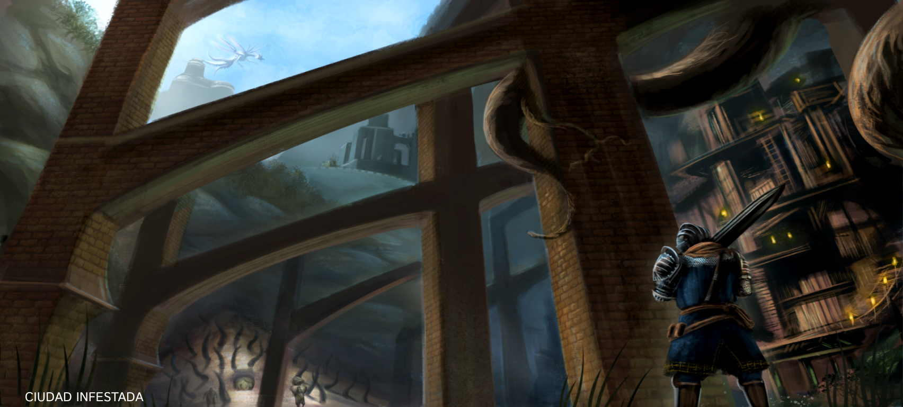

Las Campanas del Despertar
tras escapar del asilo de los no muertos,un cuerva gigante nos lleva al santuario de enlace de fuego
alli el guerrero alicaido nos contará que hay dos campanas del despertar que debemos hacer sonar y que él fallo en hacerlas sonar y por eso se dedica a dar guia a los demás no-muertos
con esto entendemos de que ya otros no-muertos han escapado del asilo y han llegado a lordran para cumplir la profecía pero hasta ahora ninguno ha podido

"él es la personificación de la depresión misma,un guerrero valiente que perdio por completo la voluntad de luchar al ver que la tarea era tan grande y tan imposible, y se permitió a hundirse en el cinismo y ahora su único motivo para seguir vivo es guiar a quienes llegan a lordran."
La primera Campana del Despertar
La Primera Campana del Despertar se encuentra en la Parroquia de los no muertos custodiado por dos gargolas
Las gárgolas se encuentran en la parte más alta de la Parroquia de los no muertos, tras pasar por una habitación llena de Huecos y un Canalizador.
Una vez vencidas estas gargolas tendremos el paso libre para hacer sonar la primera Campana del Despertar y luego comenzar nuestro viaje a Las Profundidades
yendo a la parte mas baja de los burgos de los no-muertos nos encontramos con un Demonio de Aries quien nos ataca con dos perros,que parece que pudo domesticar,y que tiene la llave que nos lleva a las Profundidades especificamente Cuidad Infestada y a la segunda Campana del Despertar
Camino hacia la segunda Campana del Despertar
al ir hacia las Profundidades el no-muerto elegido tendra que aventurarse por las acantarillas
y en busca de la segunda Campana se encontrara cara a cara con el Dragon Boquiabierto
un descendiente de los dragones eternos que hizo de ciudad infestada su hogar y con la peste y la podredumbre del pueblo se desformó hasta tomar su forma tan caracteristica
Una vez derrotado nos adentraremos a lo mas profundo de Ciudad Infestada,bajando por miles de traicioneras plataformas y escaleras hasta hasta llegar al fondo;un lago toxico lleno podredumbre ya que después de todo Ciudad Infestada es literalmente el lugar donde termina toda la basura y los desechos de Lordran

Alli podemos encontrar a queelana
una de las hijas del caos que mantiene su forma fisica y que no fue convertida en demonio esto se debe a que ella abandono Izalith antes de que se esparciera la llama del caos,presumiblemente dado a diferencias con su madre y sus hermanas
cuando la llama del caos se descontrolo ella creyó que todas sus hermanas y su madre habian desaparecido al convertirse en demonios,sin tener idea de que todas seguian vivas dentro de Izalith y con dos de sus hermanas a meros metros de distancia,sin saber que aunque sean demonios siguen siendo igual de conscientes que cuando eran humanas
Dominios de Queelag
por un tunel hecho de tela de araña y a pocos metros de queelana se encuentra a queelag otras de las hijas del caos quien es ahora en su parte superior mitad humana y en su parte inferior mitad araña de fuego,sin embargo queelag acepta su transformacion en demonio mostrando afecto a su mitad araña
luego de esto detras de una pared ilusoria nos encontraremos a su otra hermana Queelan quien esta ayudando a todos sus sirvientes a sacar el pus de dentro de sus cuerpos infectados con gusanos a cambio de su mitad araña,lo cual la enferma y la llena de dolor,Queelag en realidad estaba cazando huecos para asi conseguir humanidad y poder darsela a su hermana para calmar su dolor pero el no-muerto sin saberlo asesina a queelag para poder continuar con su mision,pero asi su hermana se quedaria sin humanidad para curarse,pero el no-muerto al apiadarse dá parte de su humanidad ya que ella lo confundira con su hermana debido a que es ciega y no puede ver con quien esta hablando
en un futuro lejano podremos encontrar el cuerpo de Queelan convertido en piedra junto al cadaver de Queelana quien se decidio aventurarse y encontro finalmente a su hermana,no se sabe si ya habia muerto pero ambas por fin se reunieron hacia el final
mas alla de esto se encuentra la campana y la palanca para hacerla sonar
ahora con las dos campanas activadas el no-muerto elegido abre el camino hacia la fortaleza de sen
donde le esperan desafios y nuevas aventuras,pero eso es otra historia